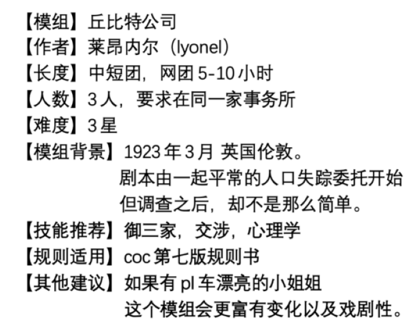

这里是 1923 年的伦敦，经历过一战，英国平静的外表下是暗流涌动。三月的一个星期
二，一位名叫奥雷的老太太登门拜访你们，请求你们帮助她寻找自己的房客安妮小姐。
奥雷太太是一位六十多岁的老妇人，白发苍苍，身形佝偻，她表示自己拥有一处不小的
房产，但儿子在一战中战死了，现在就她孤苦伶仃一个人，平时靠租房收取租金生活，有三
个租客，在经济上还算宽裕，而这次前来正是请你们帮忙寻找她的租客之一的安妮小姐。
安妮小姐是她租住最久的一个房客，两年前从乡下来到伦敦打工，就租住在奥雷太太的
公寓里，今年她 23 岁，金色的长发，笑起来有两个酒窝，说话有一些口音，是一个开朗善
解人意的漂亮女孩，两年来她一直在生活上对奥雷太太很照顾，两个人生活融洽，就像干女
儿一样，而几天前安妮小姐不辞而别，房租还剩两个月的空余，行李也没有收拾，但人没有
再回来也没有任何消息，对此奥雷太太很是担心。
